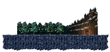
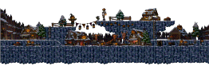
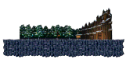
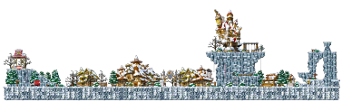
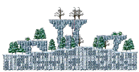
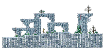
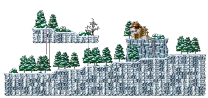
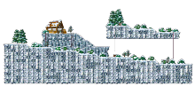
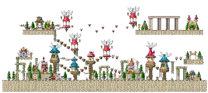

劇情原文（任務記錄）
在雪山半山腰的獵人休息站舉辦了詭異的面具祭典。
請享受祭典，也領取特別的禮物吧。
MapleStory Classic · 2.0.1 · 活動攻略
2026-10-15 ～ 11-11。Lv.10 就能去。在村莊用任務傳送到雪山半山腰的獵人休息站，解開門的三個謎題、戴上樹木面具進去參加祭典，然後一步一步把這個不斷重複的夜晚弄清楚。三章共 75 步，照順序打勾就好。
| 章節 | 開放 | 等級 | 步數 |
|---|---|---|---|
| 序章＋第一章 暴風雪中的獵人休息站 | 2026-10-15 | Lv.10+ | 22 |
| 第二章 摘不下的面具、倒流的時光 | 2026-10-22 | Lv.30+ | 27 |
| 第三章 那日的真相與最後的祭典 | 2026-10-29 | Lv.40+ | 26 |
活動期間 2026-10-15 ～ 2026-11-11（客戶端任務到 11-12 00:00 關閉）。樹木面具與專用卷軸用到 2026-12-02，萬聖節禮物箱用到 11-11。
Lv.10 以上，任務視窗會自己跳出「移動至祭典現場」。在村莊裡用它就會傳送到「雪原休息站入口」；之後要回去，再用一次選「回到原來的地方」。休息站入口往右走就是門；進門後是「雪原的面具祭典現場」，所有人都在這一張圖上。活動地圖滿人會被擋，換頻道。


第一章後半有一步會叫你摘下面具，照做就好，那是劇情。
「查不到」＝客戶端沒有掉落或物件資料，只有任務原文的提示；「推定」＝我猜的；「實測」＝玩家實際做過；「官網」＝官方活動頁寫的。活動道具 11-12 就會消失，不要囤太早。
| 東西 | 數量 | 怎麼拿 | 哪一步 |
|---|---|---|---|
| 乾燥木柴 | 10 | 勇士之村右邊那張圖打木妖 | 永不落下的太陽 |
| 火種 | 1 | 勇士之村右邊那張圖打木妖 | 永不落下的太陽 |
| 打倒 紅鬃白狼人 | 1 | 漫漫長夜的守護者 | |
| 乾燥燃料 | 50 | 打「等級範圍怪物」 | 永恆的營火 |
| 遺失的戒指 | 1 | 休息站入口的積雪 | 遺失的戒指 |
| 休息站訪客名冊 | 1 | 任務裡拿到 | 樂師的名字 |
| 布碎片 | 10 | 打小幽靈或大幽靈 | 祭典管理員 |
| 蝙蝠的皮革 | 10 | 打蝙蝠 | 祭典管理員 |
| 熟透的南瓜 | 5 | 墮落城市用楓幣買 | 祭典管理員 |
| 肥肥的肉 | 20 | 打黑肥肥或火肥肥 | 料理準備 |
| 新鮮蘑菇 | 10 | 打菇菇系列 | 料理準備 |
| 毛線 | 50 | 打利堤或黑利堤 | 直到清晨降臨 |
| 破舊的行李 | 1 | 結冰的平原，大樹附近的積雪 | 遺落的行李 |
| 打倒 小企鵝王 | 30 | 冰雪山丘、天空之城塔<1層>、天空之城塔<2層> | 遺落的行李 |
| 打倒 利堤 | 20 | 冰雪山丘、天空之城塔<5層>、天空之城塔<6層> | 遺落的行李 |
| 生鏽的撥火棍 | 1 | 任務裡拿到 | 守火人布蘭特 |
| 陳年老酒 | 1 | 任務裡拿到 | 守火人布蘭特 |
| 紅色寶石 | 1 | 打幼紅獨角獅 | 戒指的材料 |
| 閃爍粉末 | 20 | 打精靈 | 戒指的材料 |
| 堅韌的筋腱 | 20 | 打野狼或白狼 | 樂師的遺憾 |
樹木面具專用卷軸（只能用在樹木面具上）：
買東西的條件寫在行商人台詞裡：要先做過一次「漫漫長夜的守護者」；有些品項 2026-10-29 才開賣，而且要先做完「倒流的時光」。經驗值：主線只有「遺落的行李」給 100,000；兩個每日任務第一次完成也給（官網）。
這一段抄自官方活動頁（2026-10-15 公告），客戶端只有品項沒有價格；可買次數會每日或每週刷新，以遊戲內為準。硬幣商店、楓幣商店都在 2026-11-11 23:59 關門。
| 東西 | 硬幣 | 可買次數 |
|---|---|---|
| 經驗值2倍券(30分鐘)(49等級以下) | 3 | 3 |
| 經驗值1.5倍券 | 3 | 3 |
| 樹木面具專用力量卷軸60% | 2 | 2 |
| 樹木面具專用敏捷性卷軸60% | 2 | 2 |
| 樹木面具專用智力卷軸60% | 2 | 2 |
| 樹木面具專用幸運卷軸 60% | 2 | 2 |
| 樹木面具專用增幅卷軸 10% | 3 | 3 |
| 選擇型欄位4格擴充券 | 10 | 1 |
| 超級藥水 | 10 | 10 |
| 烤鰻魚 | 20 | 30 |
| 礦泉水 | 10 | 30 |
| 紅豆刨冰 | 10 | 30 |
| 棒冰棒 | 10 | 30 |
| 萬聖節南瓜帽交換券 | 20 | 1 |
經驗值2倍券只有 Lv.49 以下能買、能用。
| 東西 | 楓幣 |
|---|---|
| 樹木面具 | 50,000 |
| 樹木面具專用增幅卷軸 10% | 300,000 |
| 樹木面具專用力量卷軸60% | 100,000 |
| 樹木面具專用敏捷性卷軸60% | 100,000 |
| 樹木面具專用智力卷軸60% | 100,000 |
| 樹木面具專用幸運卷軸 60% | 100,000 |
萬聖節禮物箱每天最多買 10 箱，愈買愈貴，每天重置：
| 第幾箱 | 楓幣 |
|---|---|
| 1 | 免費 |
| 2 | 10,000 |
| 3 | 30,000 |
| 4 | 60,000 |
| 5 | 100,000 |
| 6 | 150,000 |
| 7 | 200,000 |
| 8 | 300,000 |
| 9 | 400,000 |
| 10 | 500,000 |
官網 10-15 17:30 補充：追加詛咒娃娃披風交換券。交換券雙擊就變成對應的裝備。
Lv.10 以上，這個任務會自己出現在任務視窗。在任何村莊裡用它（穆尼會問「要移動到〈雪原的面具祭典現場〉嗎？」）就會被傳送到活動地圖；要回來就再問一次「要回到原來的地方嗎？」。傳送用的穆尼客戶端沒放在任何一張地圖上，位置查不到；只知道「只能在村莊使用」。
活動地圖有人數上限，滿了會跳「目前頻道的活動地圖入場人數已滿」，換頻道再試。
在雪山半山腰的獵人休息站舉辦了詭異的面具祭典。
請享受祭典，也領取特別的禮物吧。
傳送到「雪原休息站入口」後，一封皺掉的信會自己飄過來卡在腳邊（任務自動開始）。往右走到底就是休息站的門。
信封上寫著祭典邀請，以及三段不明文字。字跡潦草，墨水因受潮後乾燥而暈開。
始終無法得知是誰寄來的。前往雪山半山腰的獵人休息站看看吧。
一封邀請函隨著風飄了過來。
找到了被籬笆圍繞的獵人休息站。
裡面透出火光，傳來笑聲與音樂聲。
然而緊閉的門無論怎麼敲打都毫無反應。
公告上的內容與撿到的紙條一字不差。手持永不落下的太陽、喚醒嗚咽的鋼鐵、戴著不屬於自己的臉。
看來必須備齊這三樣東西，門才會開啟。讓我們逐一解開謎題吧。
敲了門也毫無反應。裡面仍然傳來祭典的喧鬧聲。環顧四周，發現門旁貼著一張舊公告。
三個謎題全部解開後，裡面傳來了門閂鬆開的聲音。
門開了。
火把的火芯還在，但看起來已熄滅許久。所謂永不落下的太陽，似乎就是指這支火把。
若想點燃火把，看來需要乾燥木柴和火種。前往陽光炙熱的勇士之村找找看吧。
實測：乾燥木柴和火種都是在勇士之村右邊那張圖打木妖掉的。拿齊後回休息站入口點火把。
要開門必須解開三個謎題。
第一個是「永不落下的太陽」。
放入木柴並點燃火種後，火把熊熊燃起。
即使在如此猛烈的暴風雪中，火焰也沒有熄滅。
籬笆上掛滿了一排鐘。儘管寒風刮得猛烈，仍發不出一點聲響，原來那些鐘都被冰凍住了。
試著將結冰的鐘融化，讓它們響起吧。
實測：點籬笆上綠色的鐘就會響。下面小地圖的金點是鐘的位置。
點燃了原本熄滅的火把。
第二個謎題是「嗚咽的鋼鐵」。
冰破碎了，鐘聲響起。嘹亮的鐘聲傳遍了雪山。
儘管如此，門依然緊閉著，裡面仍然傳來祭典的喧鬧聲。
無法理解「不屬於自己的臉」是什麼意思。
就在此時，某處傳來了微弱的呼喚聲。試著找找聲音傳來的方向吧。
實測：拿到樹木面具後裝備上去（戴在臉上）就算完成。
融化了結冰的鐘並讓它響起，但門卻沒有開啟。
最後的謎題是「不屬於自己的臉」。再重新閱讀一次說明吧。
門旁的小窗戶打開了，一隻小手遞出了一副樹木面具。
被叮囑著不能讓人看見你的臉。你接過面具後戴上了它。
休息站的管理人說，這裡是雪山半山腰唯一的休息站，正在舉辦一場祭典以熬過漫漫長夜。
這裡有溫暖的營火、美食與歌聲，讓人盡情享受。不過他也提醒著，這裡有幾條必須嚴格遵守的規則。
戴上面具後門開了。遞出面具的孩子已不見蹤影。
裡面是個與外頭截然不同的地方。一名戴著白色牛角面具的魁梧男性朝這邊走來。先聽聽看他想說什麼吧。
不可以摘下面具、不可以露出肌膚、要不停地歡笑喧鬧、不可以讓營火熄滅、不可以詢問姓名與時間。
對外地人來說或許顯得奇怪，但他說這裡自古以來就是如此。
只要遵守這些，今晚也能平安度過。
獵人說，因為雪山的怪物們不喜歡熾熱的火焰和吵雜的聲音，所以每當漫漫長夜來臨，大家便聚在一起升起營火，整夜歡笑喧鬧。
他說有任何疑問都可以儘管提出。
休息站的管理人建議盡情享受祭典。
四處逛逛吧。坐在營火旁的獵人熱情地過來搭話。
據說戴上面具是為了讓怪物認不出人類，這是自古流傳下來的迷信。
就算怪物翻越籬笆闖進來，只要大家齊心協力就能將牠們驅趕出去，無需感到害怕。
儘管如此，獵人還是喃喃自語道，這裡如此明亮、又如此吵雜。
據說是因為早上需要確認人數才登記訪客名冊。而且若協助驅趕怪物，還會獲得禮物。
去找身形像竹竿一樣，站在休息站一角的祭典管理員吧。
從獵人那裡聽說了這個祭典舉辦的原因。
據說新來的客人必須先登記訪客名冊。去找祭典管理員吧。
呼喚了祭典管理員許久，才見他緩緩地開口說話。在訪客名冊上登記了名字。
說著若有怪物越過籬笆就請幫忙驅趕，並提到有為驅趕怪物的人準備特別的禮物。
紅鬃白狼人翻越了籬笆。
與客人們齊心協力將其驅趕後，再去找祭典管理員吧。
已在訪客名冊上登記名字。祭典管理員拜託協助驅趕怪物。
將翻越籬笆而來的怪物趕走吧。
將怪物驅趕走了。祭典管理員交出了說好的特別禮物。
說著今晚應該沒問題了。「今晚。」他再次強調。
守火人說整晚都必須照看著營火，既無法享受祭典也無法休息。雖然有人可以換班，但似乎因為暴風雪而無法上來。
守火人說木柴快用完了，拜託幫忙把堆放在休息站後方的木柴拿過來。
在訪客名冊上登記了名字，正在四處參觀祭典。
休息站中央的營火旁，有一位看起來十分疲憊的守火人。試著和他搭話吧。
那堆木柴半埋在雪中，因受潮嚴重而腐爛碎裂。看起來被放置了很長一段時間。
將此事告知後，守火人有些不安地說著明明幾天前還好好的，隨後又含糊其詞地說著最近記性越來越差了。
守火人顫抖著說，火一旦熄滅，那些在黑暗中等待的傢伙就會立刻出現。他反覆說著同樣的話，語無倫次，像是換了一個人。
他說必須把火燒得更旺，拜託我無論如何都要幫他找到可以燃燒的東西。
試著狩獵等級範圍怪物，蒐集乾燥燃料吧。
等級範圍怪物是指以角色等級為標準，落在-10等級至+10等級範圍內的怪物。但角色等級達65等級以上時，55等級以上的所有怪物皆視為等級範圍怪物。
堆放的木柴全都腐爛，無法使用。
守火人明顯表現出不安的神情。再去和他搭話看看吧。
將燃料交給守火人後，他終於鬆了一口氣，恢復為原本的樣子。
他說在營火前不能喝醉，等這個夜晚結束後要好好喝個夠。
還說如果撐到天亮的話，到時候一起喝一杯。
樂師正唱著一首訴說如何熬過漫漫長夜的歌。
然而歌聲總在同一個段落戛然而止，沉默片刻後，再從第一節重新開始。
試著請他唱下一段吧。
休息站的一角傳來歌聲，去找樂師看看吧。
我請樂師唱下一段，但樂師毫無反應，隨即又從頭開始唱起。
無論聽了幾遍，必定在「如此便能迎來清晨」這一句停下。
觀眾說別打擾他，好好聆聽就好，並轉移了話題。他們問說為什麼要想這麼多，只要聽著歌、笑著聊天就夠了。
對於下一句歌詞，始終沒有答案。再去問問其他人吧。
無論聽樂師唱了幾遍，都在同一段歌詞處停下。
若是持續在聆聽的其他客人，或許會知道下一句歌詞。試著問問旁邊的觀眾吧。
無論問誰，都沒有人告訴下一句歌詞。
這時，旁邊戴著兔面具的孩子說，沒用的，到這裡就斷掉了，也沒辦法。
不知道那是什麼意思。
冒險者說，在買好要給未婚妻的戒指並返回的途中，似乎因為被雪吉拉追趕而弄丟了戒指。
因為扭傷了腳踝而無法親自前去尋找，於是拜託我幫忙。
前往休息站入口處找找看遺失的戒指吧。

坐在營火前的冒險者熱情地打了聲招呼。來和他聊聊吧。
在雪堆中找到了戒指。然而這枚據說買來還不到一週的戒指，已經生鏽腐蝕了。
接過戒指的冒險者沉默了許久，說等暴風雪停了要去討個說法，開始擦拭戒指。
祭典管理員說無論怎麼數人數都對不上，擔心是否有人在這場暴風雪中外出了。
他遞上名冊，拜託我逐一詢問名字進行核對，並要求對休息站管理員保密。
祭典管理員盯著名冊一動也不動地站著。試著和他搭話吧。
首先向營火旁的守火人詢問名字。
守火人沒有任何回應。
守火人過了好一陣子才開口，卻說最近記憶模糊，想不起自己的名字。
含糊地說之後再告訴我。去問問其他人吧。
受祭典管理員的委託，正在確認客人們的名字。
向守火人詢問名字時，對方沉默不語。再問一次看看。
前去找正在唱歌的樂師。
詢問名字時，樂師一言不發，沉默以對。
樂師始終沒有說出名字，又從第一段開始唱起歌來。沉默只是越來越長。
還有尚未詢問的人。去問問旁邊那個戴著兔面具的孩子吧。
守火人和樂師都沒有說出自己的名字。
樂師的沉默越來越長。再等等看吧。
孩子毫不猶豫地回答自己的名字是穆尼。
在這個休息站中，第一個說出名字的人就是穆尼。
穆尼問道，這裡的人是不是看起來都不知道自己的名字。
她還說，難道不好奇休息站的規則為何存在嗎，若想確認的話，就把面具摘下來看看。
她說這樣就夠了。
客人們當中，只有穆尼向我說了她的名字。
穆尼似乎有話要說，聽聽她怎麼說吧。
摘下面具後，休息站頓時安靜了下來。
穆尼叫我環顧四周。休息站裡所有人都停下了手邊的事，注視著我。
甚至連呼吸都屏住了。
就在片刻前還在歡笑喧鬧的人們，無一例外地停止動作，凝視著我。穆尼說讓我親自走過去確認看看。試著跟觀眾搭話吧。
摘下面具的瞬間，休息站裡的所有人都開始注視著我。
觀眾一言不發，毫無動靜，只是注視著我。
走得更近了些，卻連呼吸聲都聽不見。
樂師也同樣停止了動作。一動也不動地盯著我，同樣聽不見任何呼吸聲。
觀眾也好，樂師也好，情況都一樣。從摘下面具的那一刻起，休息站裡所有人都停下手邊的事，盯著我看。
環顧休息站，確認究竟發生了什麼事。
依照穆尼所說摘下面具後，觀眾一言不發地盯著我看。沒有回應，沒有任何動靜，甚至連呼吸聲都聽不見。
必須確認是否只有那個人如此。去找剛才還在唱歌的樂師看看。
休息站裡一片寂靜。
只餘下營火燃燒的聲音、風聲、遠處傳來的鐘聲。儘管這裡聚集了這麼多人。
就在那時，不知何時靠近身旁的休息站管理員說要戴上面具。那已不是片刻前親切的聲音了。
休息站管理員說要立刻戴上面具。
那已不是片刻前那親切的聲音了。戴上面具吧。
休息站裡的人們全都停在原地，連呼吸都沒有。
不知何時靠近身旁的休息站管理員要求戴上面具。戴上面具吧。
戴上面具後，休息站管理員像是什麼都沒發生過一樣，再次變得親切起來。他說這裡的規矩自古以來就是如此，他也無能為力，只要遵守規矩，今晚就會安全。
樂師的演奏聲與人們的笑聲重新響起。剛才的寂靜，彷彿從未存在過。
雪原面具祭典第一章 - 暴風雪中的獵人休息站已完成。
穆尼說這場祭典有問題。休息站的人們不知道自己發生了什麼事，不斷重複著同樣的夜晚。
為何會變成這樣，穆尼也不知道。必須弄清楚原因才能終結這個夜晚，而能終結這一切的只有我們兩人。
戴上面具之後，休息站像什麼事都沒發生一樣，再度回歸喧鬧的祭典。
穆尼似乎有話要說，正在等候。去聽聽看吧。
一旦違反規則，休息站的人們就會閉口不言，什麼也無法得知。
因此必須假裝享受祭典、假裝提供協助，同時一點一點地深入探查。
穆尼說首先要保持微笑。在這裡，那是最重要的事。
祭典管理員感嘆，暴風雪過後，沒有一件裝飾品是完好的。這樣的天氣也無法出去，休息站剩餘的材料也早就用完了。
說是有一些布碎片、蝙蝠的皮革、熟透的南瓜之類的東西就行。聽說熟透的南瓜可以在墮落城市中用楓幣購買到。來找些能用於裝飾的材料吧。
決定與穆尼一同調查休息站的真相。
首先在協助祭典的過程中，自然地與其攀談。祭典管理員似乎有些困擾。
交出材料後，祭典管理員非常高興。
說要展現一下手藝，請稍等片刻。
祭典管理員請求將製作好的裝飾掛在休息站各處。說若有沒被裝飾到的地方看起來會很難看，請務必仔細地全部掛好。
確認看看休息站有沒有沒被裝飾的地方，把裝飾掛上吧。
已幫祭典管理員取來了裝飾材料。
裝飾似乎已全部製作完成。去聽聽祭典管理員說些什麼吧。
每個原本要掛裝飾的地方，建築物都已損毀。牆壁向內側倒塌，牆面上刻著深而銳利的爪痕。
當詢問起這些爪痕時，祭典管理員說到一半便突然停止不動了。
祭典管理員仍保持著剛才的姿勢，只是茫然地凝視著空中。
去找穆尼，將在建築物中看到的痕跡告訴他。
當問起建築物上留下的痕跡時，祭典管理員停止了動作。
無論怎麼呼喊都沒有反應。去告知穆尼吧。
穆尼聽到爪痕的大小後，斷定那是怪獸留下的。
那天，有什麼東西進入了這個休息站。
穆尼說，只要提起那天的事，祭典管理員就會像那樣停住。說看起來像是在不知不覺中想要守護什麼。
別著急，再去找祭典管理員看看吧。
那天似乎有怪物進入了休息所。
穆尼說有些話要交代。
祭典管理員像是什麼事都沒發生過一樣迎接了我。
似乎完全不記得剛才發生的事。
祭典管理員請你去巡視一下，確認大家是否有足夠的食物和飲料。說夜晚漫長，祭典中可不能缺少食物。
去巡視整個祭典現場，確認祭典的食物供應狀況吧。
祭典管理員不記得剛剛發生的事。
繼續協助祭典舉辦，讓故事延續下去吧。
食物無一例外，全都在腐爛的狀態下凍結了。連同餐桌翻倒散落在地上的、被雪覆蓋的，也都一樣。
即便如此，祭典管理員卻不以為意，只說大家應該都不餓吧。
祭典管理員說早上大家應該都會肚子餓，最好提前準備好。請從倉庫取出食材交給廚師。
去確認休息站的倉庫。
休息站的食物全都腐爛了，但祭典管理員毫不在意。
祭典管理員再次開口說話。
倉庫空無一物。角落裡殘留的東西已腐爛到無法辨認形狀。
穆尼說那些東西沒辦法帶走，不，是不能帶走。
穆尼拜託我去外面找些沒有腐爛的食材回來。說不想把腐爛的東西交給廚師。
語氣比平時更加低沉。去取得食材吧。
倉庫裡的食材全都腐爛了。
穆尼說有事想拜託。
廚師看到倉庫裡沒有的食材，十分高興。
說好久沒有機會大展身手了，這種天氣吃點熱呼呼的東西最棒了。
廚師請求將料理分給休息站的人們。說大家應該都到了肚子餓的時候了。
趁還沒冷掉之前分給大家吧。
將新鮮食材交給了廚師。
料理似乎已經完成了。
營火前的冒險者說他的肚子不餓，婉拒了料理。
談話期間，擦拭戒指的手始終沒有停下。說無論怎麼擦都擦不乾淨。
冒險者說，不停演奏的樂師一定又渴又餓。
把料理帶去給樂師吧。
冒險者婉拒了料理。料理還是原封不動。
冒險者說把料理交給另一個人。
樂師也說剛才已經吃過而婉拒了。
卻沒說是什麼時候吃的。
樂師說，守火人照看著營火無法離開，應該什麼都沒吃。
把料理帶去給守火人吧。
樂師也婉拒了料理。
樂師介紹了其他人。
守火人也說不餓。
整晚都在這裡卻一點都不餓，連他自己也覺得奇怪。
守火人說他想等天亮再吃，並提到從未見過休息站管理員休息或進食。
把料理送給休息站管理員吧。
冒險者、樂師、守火人都婉拒了料理。
守火人提起了另一個人。
休息站管理員說待會再吃，收下了料理。
說現在有點忙。
休息站管理員說這道料理是他妻子做的，叫人不要客氣盡管吃。
在傳遞料理的過程中，注意到了一些事情。去跟穆尼談談吧。
休息站裡沒有任何人碰過這份料理。
休息站管理員開口說話了。
冒險者不停地擦拭結婚戒指，樂師不斷演奏同一首曲子，守火人者則照看著營火，等待著遲遲不來的換班人。
穆尼說，他們似乎還放不下那些堅持到最後的執念。
穆尼要求把剩下的料理全部給她。作為交換，她拜託我一定要轉告廚師說大家都吃得很開心。
回去找廚師吧。
休息站的人們各自有些放不下的事情。
穆尼說有事想拜託。
傳達之後，廚師打心底感到高興。
他說鍋子已經空了，原本還擔心口味是否太重。
廚師說還要織完準備送給孩子的毛衣。說著孩子還小，所以沒有帶來休息站，但打算在下次祭典時一起帶來。說孩子的爸爸正在雕刻孩子喜歡的兔形面具。
考慮到孩子很快就會長大，要把毛衣織的大一些，結果毛線不夠用了，去幫忙找一些吧。
將穆尼的話轉告給廚師。
廚師說到早上為止還有事要做。
將毛線交給廚師後，廚師表示了感謝。
說這樣的量連織出袖子都綽綽有餘了。
廚師說線夠了，還要在毛衣繡上孩子的名字。
接著說出了那個孩子的名字。去找穆尼，把這件事告訴她吧。
將毛線取來交給了廚師。
來和正在繼續編織毛衣的廚師聊聊吧。
廚師是穆尼的母親。
穆尼說她已經知道了。然後她說想先一個人靜一靜，便離開了。並提到她很快就會回來。
休息站管理員手中拿著一塊木頭和一把小刀。
試著上前搭話聊聊吧。
穆尼暫時離開一陣子。
來看看休息站裡還有什麼其他事情可以幫忙吧。休息站管理員靜靜地站著，看起來似乎很疲憊。
休息站管理員說這是他一直以來在做的事，沒有關係。籬笆重新維護過了，營火也旺盛的燃燒著，這次應該沒問題。
手中拿著的木頭是要準備送給孩子的面具。他說雖然孩子還小，這次沒辦法參加祭典，但打算下次要一起帶來。
還說自己唯一的心願是不讓這份幸福破碎。
獵人說因為暴風雪沒有停，鐘聲整夜響個不停。他說已經記不清從什麼時候開始響了。
坐下來聊聊吧。
休息站管理員只是一再重複說沒事。
試著跟其他人搭話吧。獵人在叫我。
籬笆上的鐘是為了在怪物翻越時發出警報而掛上的。但因為一直響個不停，現在已經沒人在意了。
問起暴風雪已經持續幾天了，獵人卻無法回答，以規定為藉口轉移了話題。
這個夜晚誰都無法外出，大家都說要等到天亮才出去。
據說孩子們去玩捉迷藏後就遲遲沒有回來，說有四個孩子。
請在休息站內搜尋，把孩子們找回來。
與獵人交談了。
獵人說有事想拜託。
第一個孩子藏在狹窄的木桶裡。
孩子鑽出來的地方，桶子內側深深留下了兩個小小的手印。
這個孩子說，不喜歡沒人來找他的感覺，一個人待太久也會讓他很害怕。他說其他孩子藏得比自己好很多。
去找找剩下的孩子們吧。
找到了第一個孩子。還剩三個。
第二個孩子藏在廢棄的箱子裡。
箱子側面留有深深的抓痕，隱約能看見裡面的樣子。
孩子說好像是大人叫他們躲在這裡，但又記不太清楚。
讓我們去找剩下的孩子們吧。
找到了第二個孩子。還剩兩個。
第三個孩子藏在倒扣的飼料槽裡。
飼料槽外側有好幾道爪痕。
孩子問說外面的人不是大叔，真的可以出來嗎。
孩子說，在大人們找到他之前，他不打算出來。據說最後一個是最擅長躲藏的孩子。
去找剩下的孩子吧。
找到了三個孩子。還剩最後一個。
正準備去尋找最後一個孩子的時候，休息站管理員叫住了我。
說讓孩子們自己去玩。
休息站管理員說孩子們很喜歡玩這遊戲，同時玩這遊戲的時候也是最安全的。還要我也轉告獵人不必特地去找。
回到獵人那裡吧。
休息站管理員阻止我去找最後一個孩子。
獵人把話說到一半便停住，說對此也無能為力。
那個孩子應該還在等著被大人們找到，在有人出聲叫他出來之前是不會自己出來的。
穆尼說獵人或許已經察覺到了一些不對勁。
讓我們把發現的異常之處告訴獵人吧。
最後一個孩子終究沒能被找出來。
穆尼回來了。將這段時間發生的事告訴他吧。
孩子們躲藏的地方、破損的牆壁與抓痕，乃至今天的日期，全都說了出來。
獵人本想一笑置之，但最終還是陷入了沉默。
穆尼說這樣下去不行，表示要摘下獵人的面具。
跟著穆尼走吧。
獵人無言以對。
穆尼似乎下定了決心。
面具下並非人類的臉。
就在那一瞬間，樂師的演奏停止了。笑聲、杯盞碰撞聲、腳步聲全都消失了。
休息站再度陷入一片寂靜。
穆尼呼喚獵人，卻沒有任何回應。
這時，休息站管理員出現要我們停下，先聽聽他說什麼吧。
我看到了面具下的真容。整個休息站陷入了靜止，所有人的目光注視著我。
休息站管理員問道，為何要一再追究。大家不是都過得很開心嗎？
然後他懇求著，就這樣算了吧，請放過他們。
穆尼說，休息站管理員才是那個無法放下這座休息站的人，或許也正是那個讓這個夜晚不斷輪迴的人。
這裡的每個人都各自放不下心中的執念。冒險者放不下戒指，樂師放不下演奏，守火人放不下營火，而休息站管理員放不下的，是這座休息站本身。
說還有最後一件事要確認，提議再去找獵人看看。
休息站管理員說就這樣算了吧。
和穆尼談談吧。
獵人像是第一次見到我一樣迎接了我。
與初次見面時一字不差的問候語。
雪原面具祭典第2章－摘不下的面具、倒流的時光已完成。
穆尼說，十年前她在一夜之間失去了雙親，不久前才得知這座休息站的存在。她說自己為了尋找父母的蹤跡而上山，意外找到並戴上了爸爸的面具後，就這麼進入了這場祭典之中。
穆尼的父母至今仍在這座休息站，卻認不出已經長大的女兒。
將我召喚至此的正是穆尼。她說每晚都會寫下一封信，讓信透過暴風雪送出，而我是第一個前來的人。
獵人像是第一次見到我一樣迎接了我。夜晚又回到了原點。
穆尼有話要說。先聽聽她怎麼說吧。
接受了穆尼的請託。
該怎麼做，穆尼也不知道。決定先與休息站的人們一個個重新交談，從中尋找線索。
穆尼說先去找守火人。說一直等待某人，或許代表著對那人的記憶依然存在。
向守火人詢問那天夜晚的事吧。
決定和穆尼一起尋找結束這個夜晚的方法。
穆尼說有個人想先去拜訪。
守火人反問那天是什麼時候。
沉默了許久後，含糊地說完全想不起來，好像是最近睡眠不足所致。
守火人問道，上山的路上有沒有看到其他人。說是接班的人應該要來了，但似乎因為暴風雪而無法上來。
他正在一字不差地重複著初次見面時說過的話。去告訴穆尼吧。
守火人想不起那天晚上的事。
守火人再次開口說話。
也只跟穆尼說了換班的事。
穆尼說那個換班人也許還活在山下。如果那天沒能上來，就不會被困在這個夜裡了。
穆尼拜託你前往冰原雪域村莊，打聽認識休息站守火人的人。雖然已是十多年前的事，但她說應該會有記得的人。
暴風雪雖然猛烈，但在這裡已無從得知更多。下山前往冰原雪域吧。
守火人等待的換班人或許還活在山下。
穆尼說有事想拜託你。
亞凱斯特似乎知道守火人的事。試著聽聽亞凱斯特說說關於守火人的故事吧。
亞凱斯特跟我提起的約恩爺爺，正是那晚的換班人。

向亞凱斯特詢問守火人的下落。
約恩說他背著行李爬到山腰，卻因積雪深及腰部而折返。暴風雪停歇後過了好幾天，休息站仍無人下山。
他哽咽著說只有自己活了下來，過了許久都擠不出下一句話來。他稱休息站的守火人為布蘭特。
約恩說，他那天把背著的行李丟在半山腰後就下山了，裡面裝著要給布蘭特的東西。
在結冰的平原，大樹附近找找看吧。聽說最近那裡野獸很多，要小心。




那天晚上的換班者是約恩。他在半山腰折返後，在山下生活了十年。
約恩似乎還有話要說。
找到了埋在雪中的行李。過了十年，它依然還在原處。
裡面裝著一根生鏽的撥火棒和一瓶陳年老酒。
那瓶酒是約恩為了送給布蘭特而買的。據說每次熬夜輪班結束後，兩人總會一起喝一杯。
約恩託我轉告：抱歉，來晚了。辛苦你撐過了漫長的夜晚。已經夠了，可以休息了。
回到休息站吧。
找回了約恩丟棄在山腰的行李。
告知約恩裡面裝了什麼東西。
布蘭特聽到約恩還活著的消息，久久說不出話來。
他等待的不是輪班交接，而是換班人平安無事的消息。
就在那一刻，布蘭特似乎想起了什麼。
布蘭特想起了那天夜晚。他說在黎明來臨之前，自己已經躺在冰冷的地上動彈不得，只能眼睜睜地看著休息站管理員在熄滅的火堆前不斷放入濕木柴。
他說想開口叫對方停下、叫對方逃跑，卻發不出聲音。去告訴穆尼吧。
將約恩的消息告知後，布蘭特似乎想起了什麼。
讓我們聽聽布蘭特的說法。
放下一直緊握的事物，記憶便會歸來。
穆尼說，這或許就是結束這個夜晚的方法。讓我們逐一解開其他人們的執念。
冒險者說，無論怎麼擦戒指都擦不乾淨，這樣的東西沒辦法送出去。據說那是特地跑到天空之城才好不容易買到的，要再找一個也不容易。
試著在天空之城找找能製作同款戒指的人吧。
放下執著，記憶便會歸來。
接下來是一位不停擦拭戒指的冒險者。試著和他搭話吧。
天空之城的妖精 克莉爾還記得那枚戒指。
據說當時有位客人苦苦哀求，說一定要拿到結婚戒指。她問道，那枚戒指至今還沒送出去嗎。
克莉爾很同情冒險者的處境，決定重新製作戒指。但她說這種材料現在很少使用，必須由我親自去取得才行。
她說只要有材料，連寶石大小都能做得一模一樣。去收集材料吧。
妖精 克莉爾正是製作那枚戒指的人。
聽聽克莉爾怎麼說吧。
克莉爾製作了一枚一模一樣的戒指。
她說就連寶石大小也完全相同。
回到休息站，將新戒指交給冒險者吧。
得到了一枚和失去的那枚一模一樣的戒指。
冒險者收到新戒指後仍未能恢復記憶。
他說必須由自己親手將自己挑選的東西送出去，於是放下了新戒指，繼續擦拭那枚舊戒指。
冒險者說，他還寫了一封信，要連同戒指一起送出。本來打算在春天舉行婚禮時交給對方的。
信封上寫著對方的名字與住處，去天空之城找找看名為莉芙的人吧。

換了新戒指後，冒險者的記憶並未因此恢復。
冒險者又取出了什麼東西。
信的收件者是一位名叫莉芙的女人。
將戒指與信交給她後，她說已經過了十年，哭了好一陣子。
莉芙說她以為冒險者連招呼都沒打就離開了，因此討厭了他整整十年。
她花了很長的時間寫了一封回信，拜託將信轉交給他。回到休息站吧。
將戒指和信轉交給了莉芙。
收到回信的冒險者皮亞恢復了記憶。
據說他腳踝受傷後抵達了休息站，並受到了休息站管理員和獵人的幫助。
他說那天晚上無法行動，未能提供任何幫助，對此深感抱歉，請務必轉達。
近看才發現樂器有一根弦斷了。從斷裂處已經磨損的樣子來看，應該是很久以前的事了。
穆尼說，正是因為缺少那根弦所發出的音，才無法唱完那首歌。去找能製作新弦的堅韌筋腱吧。
冒險者皮亞找回了記憶。
接下來是一直重複同一首曲子的樂師。去聽聽他的演奏吧。
用筋腱修理了弦，但樂師還是在同一個地方停止了。
問題不在樂器。
穆尼說必須找出歌曲的後半段歌詞。他說記得小時候曾從到村莊來的樂師那裡聽過。
山下或許會有記得那首歌的人。去找約恩吧。
弦修好了，樂師卻還是在同一個地方停止了。
穆尼似乎想到了其他辦法。
約恩說，每逢漫漫長夜，他總會唱起那首歌。
但後半段歌詞他也記不起來了。據說已經超過十年沒唱了。
約恩告知了一位名叫史卡圖勒的老獵人。據說是這一帶的老居民，在休息站也經常見到他。
去找史卡圖勒吧。
約恩也記不得歌曲的後半段。
約恩似乎想起了另一個人。
史卡圖勒記得歌曲的後半段。打開門踏上歸途，回到等待著我們的懷抱吧。
據說這是所有聚集在那裡，圍坐在一起歌唱的人們的共同願望。
演唱這首歌的樂師名叫科達。史卡圖勒答應把歌詞寫下來。
聽說樂師那天也在那裡，史卡圖勒沉默了許久。
他說要向科達打聲招呼，多虧了他，讓他在雪山漫長的夜晚過得很愉快。
回到休息站，把歌詞和問候一併帶去吧。
史卡圖勒答應要把歌曲的後半段歌詞寫下來。
再多聽聽史卡圖勒說的故事吧。
樂師科達時隔十年第一次將曲子演奏到最後，找回了記憶。
那天也唱著這首曲子。據說在疲憊的人們之中，只有休息站管理員坐在一旁刻著面具，一同跟著唱歌。
他說很感謝聽到最後，請務必轉達給休息站管理員。
獵人說最後一個孩子還沒有出來，應該還在等著有人去找他。他喃喃自語著當初就不該把那孩子帶來這裡。
再次搜尋休息站，找到最後的那個孩子吧。
樂師科達找回了記憶。
獵人呼喚著我。
在鎖著的門另一側找到了最後一個孩子。
孩子反覆問了好幾次，確定真的找到了嗎。
孩子說獨自前往好恐怖。
一起陪他走到其他孩子們所在的地方吧。
找到了最後一個孩子。
孩子說想回到朋友們身邊。
四個孩子全部聚齊，漫長的捉迷藏也結束了。
孩子們最後的記憶，是那位拉著他們的手、急忙將他們藏起來的休息站管理員。他們說因為他告訴他們這是捉迷藏，所以沒那麼害怕，請幫忙轉達感謝。
廚師說他把毛衣織得太大了，想請戴兔子面具的孩子試穿一下。
說雖然年齡和體型都不同，卻一直讓他想起自己的女兒。把毛衣拿給穆尼試穿吧。
孩子們的捉迷藏結束了。
廚師似乎編完了毛衣。去和他說說話吧。
穆尼接過毛衣，沉默了好一會兒。
這件毛衣對穆尼來說太小了。袖子只到手肘，鈕扣也扣不上。
穆尼說要去找廚師。一起過去吧。
廚師將毛衣轉交給了穆尼。
穆尼似乎想試穿看看。
穆尼摘下面具，站在母親面前。
廚師凝視了許久，叫出了女兒的名字。說抱歉那天沒能回來，謝謝她這樣健康地長大。
芙莉格說，那天的事不是丈夫的錯。是她自己在凌晨催促著丈夫一早就要下山，才導致丈夫為了收尾要送給女兒的面具而短暫離開了崗位，意外就在那段時間發生了。
他明明整夜都在檢查籬笆和鐘，守著營火。
她請我們幫忙轉告，他做得已經足夠了，不必再抱持著罪惡感和責任感。去見見休息站管理員吧。
穆尼時隔十年與母親再次見面。
穆尼似乎有話要說。
休息站管理員彷彿什麼事都沒發生一樣，詢問著是否有好好享受祭典。
他說今天晚上非常好，大家看起來都很開心不是嗎。
將守火人與冒險者、樂師與孩子們、還有妻子說的話全都轉達後，庇護所管理員的面具出現了裂縫。
他反覆自責著自己離開了崗位、沒能確認鐘聲的事。
穆尼說請給他一點時間。
休息站管理員仍然什麼都不承認。
讓我們把目前聽到的所有故事都告訴他。
穆尼遞出了爸爸的面具。那天晚上休息站管理員離開崗位，是為了收尾要送給女兒的面具。
面具碎裂落下，臉露了出來。臉上有一道無法遮掩的深重疤痕。
穆尼說這不是爸爸的錯，她不會怨恨任何人。
休息站管理員說，他讓這個夜晚過得太漫長了。大家應該都在等待早晨的到來，卻因為他而度過了太漫長的夜晚。
他拜託我們熄滅營火，結束這場祭典。請熄滅營火。
休息站管理員認出了女兒。
讓我們聽聽休息站管理員的故事。
睽違十年，休息站的營火熄滅了。
沒有音樂，也沒有笑聲。他說已經很久沒有這樣安靜的感覺了。
科達正在為孩子們演奏最後一曲。這是一首沒有鬼，也沒有躲藏者的歌。
再多看看休息站吧。
營火熄滅，漫長的夜晚終於結束。
休息站的人們正一一準備離去。四處看看吧。
布蘭特開了約恩買來存放的酒，這是十年來的第一次。
約定好要一起喝的人終究沒能赴約，但他說，當時許下的那個約定——若能活到天亮就喝一杯——也算是兌現了。
休息站管理員說，若再次來到這座山，請幫忙生起營火。說這對度過雪原的夜晚會有幫助，如此便已足夠。
去找穆尼吧。
休息站的人們已各自準備好離去。
休息站管理員說最後還有話想說。
漫長的夜晚結束了，雪原面具祭典也落下帷幕。
穆尼決定在避難所多待一會兒。說是需要點時間，來補上整整十年來未能道別的機會。
雪原面具祭典第三章——那日的真相與最後的祭典已完成。